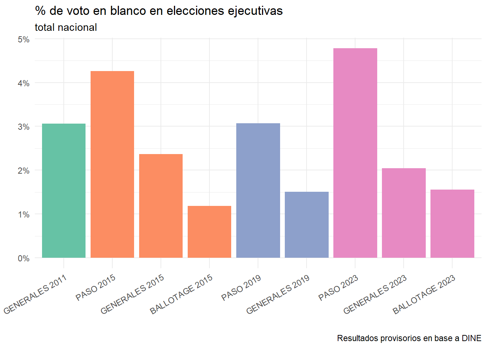

#install.packages("tidyverse") # instalamos el conjunto de librerías que componen la colección tidyverse
library(tidyverse) # cargamos las funciones para poder utilizarlas1. Piletazo
¿Qué significa realmente analizar datos? La idea de arrancar con un primer recorrido de punta a punta tiene un mero efecto didáctico: dar la suficiente energía para no abandonar el proceso antes de aprender. Asimilar un lenguaje de programación es complejo y puede ser muy frustrante para quienes están empezando. Como con el resto de las cosas, la única forma es poner manos al teclado y practicar hasta que salga; algo muy difícil de hacer si no se visualiza el sentido del esfuerzo.
1.1. Antes de arrancar: conociendo los utensilios
Un breve y necesario paréntesis de definiciones de los elementos con los que vamos a estar trabajando.
- Script: secuencia de comandos. Nuestros scripts estarán escritos en
R. - Rstudio: plataforma que usaremos para administrar los archivos necesarios para trabajar con
R. - Proyecto de Rstudio: es una forma de agrupar los distintos scripts y archivos que utilicemos en un sólo lugar. También nos facilita trabajar con directorios o guardar ciertas configuraciones del entorno.
- Documento de R (.r): archivo con instrucciones escritas en
R. - Documento de RMarkdown (.rmd): archivo que permite combinar instrucciones escritas en
Rcon distintos formatos de texto. Se utiliza para escribir informes fáciles para leer y cómodos para trabajar. - Quarto document (.qmd): Símil al anterior, pero permite distintos lenguajes. Es el que está presente en la mayor parte de este curso.
- Función: conjunto de instrucciones empaquetados para usar con mayor comodidad.
- Paquete/Librerías: conjunto de funciones, en general, con el objetivo de trabajar en un rubro en particular o con cierto tipo de datos.
1.2. Pregunta-problema
Hacer un análisis requiere primero una pregunta que nos guíe. Es importante para evitar perdernos en el mar de información disponible. Enfocar los esfuerzos nos va a ayudar a buscar mejor qué función necesitamos para responder nuestra pregunta y además valoriza uno de los elementos más importantes que tienen para aportar las Ciencias Sociales al mundo de datos: hacer preguntas interesantes.
En este caso nos vamos a preguntar por el voto en blanco en las elecciones nacionales argentinas. ¿Cómo fue evolucionando entre las últimas elecciones el voto en blanco?
1.3. Conociendo R
Lo primero que debemos hacer es cargar las librerías, esto es, el conjunto de funciones que vamos a utilizar para responder nuestra pregunta-problema. Aquí damos la bienvenida a Tidyverse: un conjunto de paquetes que tienen una manera similar de escribirse y utilizarse, facilitando el trabajo conjunto de las distintas librerías. La primera vez que se utiliza una librería, hay que descargarla con la función install.packages().
Luego, tenemos que cargar los datos que vamos a utilizar. La función dependerá del tipo de archivo que tengamos que cargar. Los tipos de archivos más comunes son .csv y .xlsx. Los datos están descargados de la plataforma Data CP.
Para un acceso más simple, pueden consultar las fuentes de datos aquí.
data <- read_csv("data/encuentro_1/ARG_elecciones.csv")
data# A tibble: 54,913 × 10
id seccion Elecciones Partido Porcentaje Votos Participacion electores
<chr> <chr> <chr> <chr> <dbl> <dbl> <dbl> <dbl>
1 BUENOS A… Adolfo… BALLOTAGE… BLANCO 1.19 134 79.2 14171
2 BUENOS A… Albert… BALLOTAGE… BLANCO 1.6 123 84.2 9147
3 BUENOS A… Almira… BALLOTAGE… BLANCO 1.37 4738 83.8 412578
4 BUENOS A… Arreci… BALLOTAGE… BLANCO 1.53 306 84.0 23840
5 BUENOS A… Avella… BALLOTAGE… BLANCO 1.61 3617 82.5 272641
6 BUENOS A… Ayacuc… BALLOTAGE… BLANCO 1.53 212 81.2 17022
7 BUENOS A… Azul, … BALLOTAGE… BLANCO 1.02 452 80.3 55060
8 BUENOS A… Bahia … BALLOTAGE… BLANCO 1.57 2948 80.4 233442
9 BUENOS A… Balcar… BALLOTAGE… BLANCO 1.01 312 81.9 37704
10 BUENOS A… Barade… BALLOTAGE… BLANCO 1.03 230 82.1 27119
# ℹ 54,903 more rows
# ℹ 2 more variables: votantes <dbl>, Provincia <chr>#install.packages("readxl") # en caso de error, instalar y cargar librería readxl
library(readxl)
data <- read_excel("data/encuentro_1/ARG_elecciones.xlsx")
data# A tibble: 54,913 × 10
id seccion Elecciones Partido Porcentaje Votos Participacion electores
<chr> <chr> <chr> <chr> <dbl> <dbl> <dbl> <dbl>
1 BUENOS A… Adolfo… BALLOTAGE… BLANCO 1.19 134 79.2 14171
2 BUENOS A… Albert… BALLOTAGE… BLANCO 1.6 123 84.2 9147
3 BUENOS A… Almira… BALLOTAGE… BLANCO 1.37 4738 83.8 412578
4 BUENOS A… Arreci… BALLOTAGE… BLANCO 1.53 306 84.0 23840
5 BUENOS A… Avella… BALLOTAGE… BLANCO 1.61 3617 82.5 272641
6 BUENOS A… Ayacuc… BALLOTAGE… BLANCO 1.53 212 81.2 17022
7 BUENOS A… Azul, … BALLOTAGE… BLANCO 1.02 452 80.3 55060
8 BUENOS A… Bahia … BALLOTAGE… BLANCO 1.57 2948 80.4 233442
9 BUENOS A… Balcar… BALLOTAGE… BLANCO 1.01 312 81.9 37704
10 BUENOS A… Barade… BALLOTAGE… BLANCO 1.03 230 82.1 27119
# ℹ 54,903 more rows
# ℹ 2 more variables: votantes <dbl>, Provincia <chr>Cuando utilizamos R vamos a estar utilizando objetos. El operador <- se utiliza para asignar el resultado de una función a un objeto y se puede crear con botón alt + botón -. Los objetos pertenecen a una clase, lo que implica que se permiten ciertas operaciones y se restringen otras. Por ejemplo, a los números se les puede aplicar operaciones aritméticas, a las tablas se les puede consultar sus filas-columnas y a las cadenas de texto se las puede pasar a mayúsculas.
# consultamos la clase de cada uno de los tres objetos
class(42)[1] "numeric"class(data)[1] "tbl_df" "tbl" "data.frame"class("cadena de texto")[1] "character"# aplicamos operaciones
42 * 42[1] 1764dim(data)[1] 54913 10toupper("cadena de texto") # función para pasar a mayúscula una cadena de texto[1] "CADENA DE TEXTO"# qué pasa si no respetamos la clase
# "cadena de texto" * "cadena de texto"
# dim(42)Las últimas líneas del código anterior están comentadas, ya que ante el error se detiene la operación. Pueden probarlas por su cuenta eliminado el #, comando que abre un comentario: el código que sigue será ignorado por el programa.
Para obtener la documentación de una función, podemos ejecutar un signo de pregunta y la función. Nos abrirá la documentación correspondiente en el panel derecho.
?dimA los archivos del tipo data.frame podemos aplicarle distintas funciones para hacer una exploración rápida de qué hay dentro. Veamos algunas:
glimpse(data) # exploramos nombres de columnas, tipo de datos, algunos primeros valoresRows: 54,913
Columns: 10
$ id <chr> "BUENOS AIRES_ADOLFO ALSINA", "BUENOS AIRES_ALBERTI", "B…
$ seccion <chr> "Adolfo Alsina, Buenos Aires", "Alberti, Buenos Aires", …
$ Elecciones <chr> "BALLOTAGE 2015", "BALLOTAGE 2015", "BALLOTAGE 2015", "B…
$ Partido <chr> "BLANCO", "BLANCO", "BLANCO", "BLANCO", "BLANCO", "BLANC…
$ Porcentaje <dbl> 1.19, 1.60, 1.37, 1.53, 1.61, 1.53, 1.02, 1.57, 1.01, 1.…
$ Votos <dbl> 134, 123, 4738, 306, 3617, 212, 452, 2948, 312, 230, 317…
$ Participacion <dbl> 79.22, 84.22, 83.77, 84.05, 82.52, 81.24, 80.30, 80.37, …
$ electores <dbl> 14171, 9147, 412578, 23840, 272641, 17022, 55060, 233442…
$ votantes <dbl> 11226, 7704, 345606, 20038, 224976, 13829, 44214, 187615…
$ Provincia <chr> "BUENOS AIRES", "BUENOS AIRES", "BUENOS AIRES", "BUENOS …dim(data) # cantidad de filas y columnas [1] 54913 10summary(data) # devuelve el tipo de datos que hay dentro de las columnas y, para aquellas columnas de tipo numéricas, devuelve algunas métricas de posición como valores mínimos, máximos, mediana, promedio. id seccion Elecciones Partido
Length:54913 Length:54913 Length:54913 Length:54913
Class :character Class :character Class :character Class :character
Mode :character Mode :character Mode :character Mode :character
Porcentaje Votos Participacion electores
Min. : 0.000 Min. : 0 Min. : 0.00 Min. : 0
1st Qu.: 0.320 1st Qu.: 37 1st Qu.: 69.93 1st Qu.: 9273
Median : 1.290 Median : 247 Median : 75.38 Median : 22116
Mean : 9.997 Mean : 4506 Mean : 73.92 Mean : 61369
3rd Qu.: 8.760 3rd Qu.: 1989 3rd Qu.: 79.56 3rd Qu.: 60026
Max. :100.000 Max. :621106 Max. :104.49 Max. :1131854
NA's :5 NA's :3
votantes Provincia
Min. : 0 Length:54913
1st Qu.: 6923 Class :character
Median : 16283 Mode :character
Mean : 46094
3rd Qu.: 44921
Max. :879215
Ahora bien, construimos una tabla con el voto en blanco por elecciones y calculamos el mismo como % de votantes de cada elección. Aquí vamos a bienvenir a el famoso pipe (%>%). Este operador nos va a facilitar la lectura del código cuando querramos utilizar varias funciones sobre un mismo data.frame.
tabla_blanco <- data %>%
filter(Partido == "BLANCO") %>% # filtramos votos en blanco
group_by(Elecciones) %>% # agrupamos por elecciones
summarise(blanco = sum(Votos), # sumamos votos en blanco
votantes = sum(votantes), #sumamos votantes
blanco_per = blanco/votantes) %>% # calculamos el porcentaje
mutate(anio = str_sub(Elecciones,-4)) # creamos una nueva columna que indica el año de la elección
tabla_blanco # mostramos el resultado# A tibble: 10 × 5
Elecciones blanco votantes blanco_per anio
<chr> <dbl> <dbl> <dbl> <chr>
1 BALLOTAGE 2015 305229 25738560 0.0119 2015
2 BALLOTAGE 2023 417515 26863246 0.0155 2023
3 GENERALES 2011 665223 21712009 0.0306 2011
4 GENERALES 2015 596028 25223502 0.0236 2015
5 GENERALES 2019 399751 26595503 0.0150 2019
6 GENERALES 2023 554161 27100675 0.0204 2023
7 PASO 2011 NA 22250504 NA 2011
8 PASO 2015 989823 23204024 0.0427 2015
9 PASO 2019 758988 24724014 0.0307 2019
10 PASO 2023 1148342 24016776 0.0478 2023 ¡Qué interesante sería ver esta tabla en un gráfico! La librería predilecta para realizar gráficos en R es ggplot2. ggplot2 construye a los gráficos como capas: primero se inserta la base de datos (mediante el comando %>%); luego se mapean los ejes x e y (mediante la función aes()); con la función geom_col() se indica realizar un gráfico de columnas y por último se agregan las capas de definiciones estéticas.
library(scales)
# cambiamos el tipo de la columna para que tenga un orden
orden <- c("PASO 2011", "GENERALES 2011",
"PASO 2015", "GENERALES 2015","BALLOTAGE 2015",
"PASO 2019", "GENERALES 2019",
"PASO 2023", "GENERALES 2023","BALLOTAGE 2023")
p <- tabla_blanco %>%
drop_na() %>% # eliminamos elecciones sin valores
ggplot(aes(x=factor(Elecciones,orden), y=blanco_per, fill=anio))+ # indicamos qué variables vamos a utilizar
geom_col(show.legend=FALSE)+ # indicamos el tipo de gráfico. Geom_ es el prefijo para ver los distintos gráficos que pueden usarse
theme_minimal()+
theme(axis.text.x=element_text(angle=30, hjust=1))+ # rotamos las etiquetas de los ejes para que sean legibles
labs(title="% de voto en blanco en elecciones ejecutivas",
subtitle="total nacional", x="", y="", caption="Resultados provisorios en base a DINE")+
scale_fill_brewer(palette="Set2")+ # elegimos una paleta para el argumento "fill"
scale_y_continuous(labels=percent) # indicamos que el eje Y es un porcentaje
p
Para finalizar, guardamos ambos elementos para poder recuperarlos localmente.
tabla_blanco %>%
write_excel_csv("outputs/encuentro_1/arg_votos_blanco.csv")
tabla_blanco %>%
write_excel_csv("outputs/encuentro_1/arg_votos_blanco.xlsx")
p # lo ejecutamos nuevamente para poder utilizar luego la función de guardadoggsave("outputs/encuentro_1/arg_votos_blanco.jpg") # guardamos la imagen con fondo blanco
ggsave("outputs/encuentro_1/arg_votos_blanco.png") # guardamos la imagen sin fondo